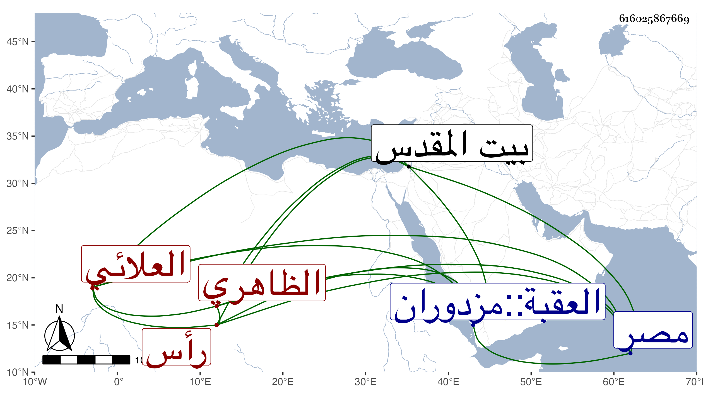

0902Sakhawi.DawLamic.ITO20230111-ara1.EIS1600.616025867669
Biography ID: 616025867669
673
قانبك العلائي شيشحة الظاهري جقمق رأس نوبة ثاني . قتل في مصاففة بين العسكر المصري وعلى دولات في صفر سنة تسع وثمانين وكان متقدما في الرمح والرمي زائد الإمساك غير مذكور بكثير خير . أنشأ بيتا هائلا بدرب الخدام بالقرب من سويقة العزى وبجانب البوابة الكبرى مسجد عتيق فجدده وأخذ منه جانبا فيها ووقف عليه ربما لطيفا مقابله بعد أن رممه باشر شد الشون ثم الحجوبية الثانية ثم رأس نوبة وهو الذي سار بالحج من العقبة إلى مصر حين جهز أميره جانبك منها إلى القدس منفيا .
